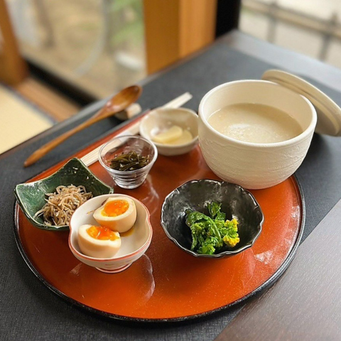
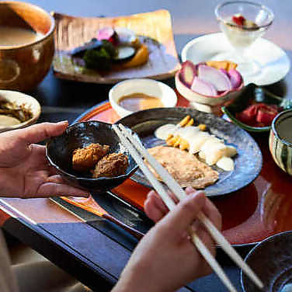
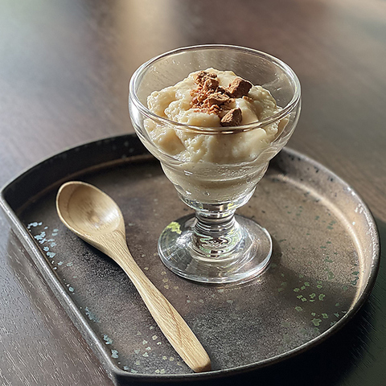
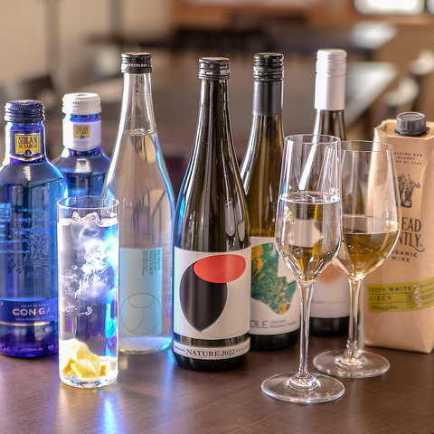
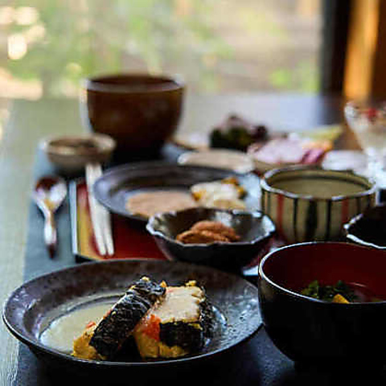
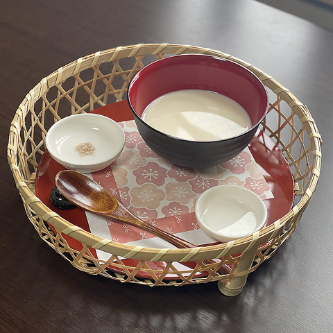

Galerie photos






Kevin, Loïc, May Nhia, Stéphanie, Estelle
Du 5 Avril au 27 Avril 2026
Grand buffet de fruits de mer / sushi / yakiniku à Ginza (Tokyo), adapté aux groupes et aux familles avec une très grande capacité d'accueil.






Seafood Buffet Dining Ginza Happo est une adresse très pratique pour un groupe de 5 personnes qui veut un repas complet en un seul lieu : buffet large (150+ plats), fruits de mer, sushi, grillades, desserts, et une salle d'environ 400 places dans le secteur Ginza / Shimbashi.
Conversion indicative sur base 1 EUR = 183.02 JPY (réf. BCE du 04/03/2026). Taux variable.